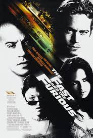
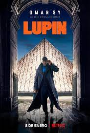

Meus filmes Favoritos

Dominic Toretto (Vin Diesel) é o líder de uma gangue de corridas de ruas em Los Angeles que está sendo
investigado pela polícia por roubo de equipamentos eletrônicos. Para investigá-lo é enviado Brian O'Conner
(PaulWalker), que se infiltra na gangue na intenção de descobrir se Toretto é realmente o autor dos crimes ou se
há alguém mais por trás deles.

Durante seis meses, Jordan Belfort (Leonardo DiCaprio) trabalhou duro em uma corretora de Wall Street,
seguindo os ensinamentos de seu mentor Mark Hanna (Matthew McConaughey). Quando finalmente consegue ser contratado
como corretor da firma, acontece o Black Monday, que faz com que as bolsas de vários países caiam repentinamente.
Sem emprego e bastante ambicioso, ele acaba trabalhando para uma empresa de fundo de quintal que lida com papéis
de baixo valor, que não estão na bolsa de valores. É lá que Belfort tem a ideia de montar uma empresa focada
neste tipo de negócio, cujas vendas são de valores mais baixos mas, em compensação, o retorno para o corretor é bem
mais vantajoso. Ao lado de Donnie (Jonah Hill) e outros amigos dos velhos tempos, ele cria a Stratton
Oakmont, uma empresa que faz com que todos enriqueçam rapidamente e, também, levem uma vida dedicada ao prazer.

Baseada nos romances policiais de Maurice Leblanc, Lupin acompanha Assane Diop (Omar Sy), um homem que, 25
anos atrás, viu sua vida virar de cabeça para baixo com a morte de seu pai, então acusado injustamente de um
crime. Agora, ele está em busca de vingança e, para isso, se inspira em Arsène Lupin, o famoso "ladrão de casaca" da
literatura francesa. Conhecido como "Robin Hood da Belle Époque", Lupin se tornou um gênio do crime na Paris do
início do século 20 - e Diop vai seguir seus passos nos dias de hoje.
Sintonia, série brasileira original da Netflix, traz as histórias de Doni (Christian Malheiros), Nando (MC
Jottapê) e Rita (Bruna Mascarenhas), todos moradores da mesma favela em São Paulo. Crescendo juntos pelas
ruas da comunidade, eles descobriram aos poucos o mundo do tráfico de drogas, da religião e também da música. No
entanto, as experiências da infância os levaram a trilhar caminhos bem diferentes, e agora esse trio sabe
que quem pode salvá-los dos problemas com os quais se envolveram são eles mesmos. A série apresenta a dinâmica
das organizações criminosas nas periferias dos centros urbanos. E, além dos problemas sociais referentes à
favela, a trama também traz um olhar intimista sobre os jovens músicos que ascendem no funk e conquistam a fama.

Frank Abagnale Jr. (Leonardo DiCaprio) já foi médico, advogado e co-piloto, tudo isso com apenas 18
anos. Mestre na arte do disfarce, ele aproveita suas habilidades para viver a vida como quer e
praticar golpes milionários, que fazem com que se torne o ladrão de banco mais bem-sucedido da
história dos Estados Unidos com apenas 17 anos. Mas em seu encalço está o agente do FBI Carl
Hanratty (Tom Hanks), que usa todos os meios que tem ao seu dispor para encontrá-lo e capturá-lo.

1822. Hugh Glass (Leonardo DiCaprio) parte para o oeste americano disposto a ganhar dinheiro caçando.
Atacado por um urso, fica seriamente ferido e é abandonado à própria sorte pelo parceiro John
Fitzgerald (Tom Hardy), que ainda rouba seus pertences. Entretanto, mesmo com toda adversidade,
Glass consegue sobreviver e inicia uma árdua jornada em busca de vingança.
Inicio